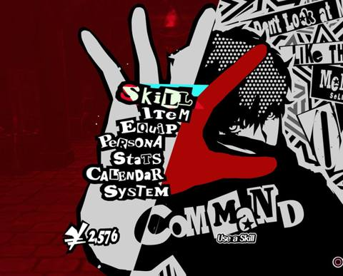
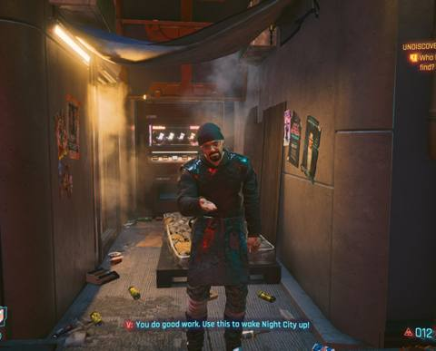

Reading Identity Through the UI
How Persona 5, Cyberpunk 2077, and Metal Gear Solid V use interface design to visualize the self.
Every first-person interface is doing more than reporting your health and ammo it is telling you who you are inside its world. This essay walks through three very different HUD languages, arguing that each one visualizes a distinct relationship to selfhood: performance, fusion, and concealment.
Persona 5 Performance

Persona 5's UI is maximalist and theatrical: diagonal red-white-black slashes, hand-cut collage typography, a calendar and Velvet Room interface that frame everyday life as performance. This fits the game's core conceit Personas are literal Jungian masks, and the UI itself behaves like a mask being put on. The command menu is even staged as a clawed red hand tearing across the screen, an aggressive gesture that makes selecting "Skill" or "Item" feel like an act of rebellion rather than bookkeeping.
Nothing here is neutral. The jagged, torn-paper edges on every panel connote the Phantom Thieves' identity as calling-card vigilantes; the oversized, hand-lettered wordmarks turn simple menu navigation into a stylistic statement. The UI doesn't just let you act it performs your identity back at you.
The UI doesn't display the menu it performs it.
Cyberpunk 2077 Fusion

Cyberpunk 2077 takes the opposite approach from Persona 5. Its interface is diegetic the currency transfer readout, the quest markers, the subtitled dialogue all appear as if V's own optics are rendering them, not as a game overlay laid on top. Glitch-typography and cool cyan accents blur where the character's augmented vision ends and the player's screen begins.
This visualizes a body that has been partially replaced by machine: information doesn't arrive through a "menu," it arrives through cybernetic eyes that read the world the way a phone reads a QR code. The HUD's fusion with the environment mirrors the game's core theme how much of "you" survives once enough of your body is hardware.
The interface doesn't sit on top of the world it's grafted into it.
Metal Gear Solid V Concealment
Metal Gear Solid V strips everything down. A near-invisible soliton radar, a physical iDroid tablet menu accessed rather than always-on, minimal color across the board. Where Persona 5 shouts and Cyberpunk 2077 fuses, MGSV withholds the HUD gives you the absolute minimum needed to survive and nothing more.
That restraint mirrors the game's themes of camouflage and erased identity. Venom Snake himself is a fabricated name worn like a disguise; a HUD that refuses to announce itself is the natural interface for a protagonist built entirely out of concealment.
Restraint is its own kind of disguise.
Three Interfaces, Three Selves
A side-by-side reading of how each HUD's formal choices encode a different relationship to identity.
| Persona 5 | Cyberpunk 2077 | Metal Gear Solid V | |
|---|---|---|---|
| Palette | Red / black / white, high contrast | Magenta / cyan against grime | Flat gray, near colorless |
| Typography | Hand-cut collage lettering | Glitch-type, technical sans | Plain utilitarian sans |
| Iconography | Torn paper, claws, wordmarks | Scan lines, network readouts | Dotted radar, bare numerals |
| Core metaphor | The mask being put on | The body fused with machine | The name worn as disguise |
Sources
-
Barthes, Roland. Mythologies & Image–Music–Text. Framework for reading HUD elements as connotative, not neutral.
-
Navas, Eduardo. Remix / postproduction theory. Framework for reading each HUD as a recombination of real-world visual references.
-
Lupton, Ellen. Thinking with Type. Grid and type-hierarchy principles applied to this page's own layout.
-
Crow, David. Visible Signs. Semiotics grounding for reading interface elements as signs.
-
In-game screenshots: Persona 5, Cyberpunk 2077, Metal Gear Solid V. [Add exact capture source/credit here own gameplay capture, platform, and date.]